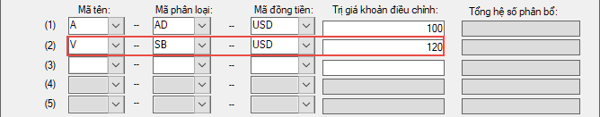
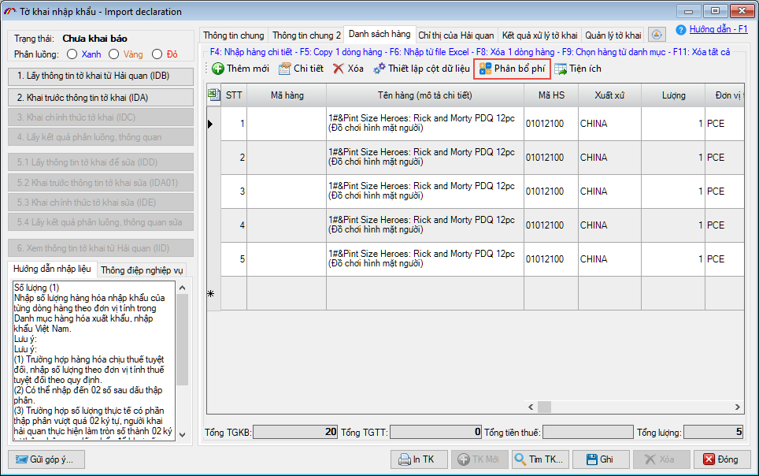
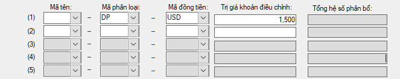

KHAI BÁO PHÍ VC, BH VÀ CÁC KHOẢN ĐIỀU CHỈNH (Chi tiết)
Trong phần này, chúng tôi sẽ hướng dẫn quý doanh nghiệp chi tiết cách nhập dữ liệu cho tờ khai có các khoản phí vận chuyển, bảo hiểm hoặc khoản điều chỉnh áp dụng cho tờ khai không có nhánh và tờ khai nhiều nhánh.

I - HƯỚNG DẪN KHAI BÁO PHÍ VẬN CHUYỂN, BẢO HIỂM
Phí vận chuyển : Trường hợp hàng hóa có khoản phí vận chuyển, bạn nhập vào Mã loại, Mã tiền và Số tiền phí vận chuyển.
Đối với chỉ tiêu Mã loại, tùy theo từng trường hợp hàng hóa mà bạn chọn mã phù hợp như sau:
Đối với chỉ tiêu Mã loại, tùy theo từng trường hợp hàng hóa mà bạn chọn mã phù hợp như sau:
- A: Khai trong trường hợp chứng từ vận tải ghi Tổng số tiền cước phí chung cho tất cả hàng hóa trên chứng từ.
- B: Khai trong trường hợp:
- Hóa đơn lô hàng có cả hàng trả tiền và hàng F.O.C;- Tách riêng phí vận tải của hàng trả tiền với hàng F.O.C trên chứng từ vận tải.Tương ứng với mã này tại ô phí vận chuyển chỉ nhập phí của hàng phải trả tiền (ô 3) để hệ thống tự động phân bổ, đối với các mặt hàng F.O.C người khai hải quan tự cộng cước phí vận tải để tính toán trị giá tính thuế rồi điền vào ô trị giá tính thuế của dòng hàng F.O.C. - C: Khai trong trường hợp tờ khai chỉ nhập khẩu một phần hàng hóa của lô hàng trên chứng từ vận tải.
- D: Phân bổ cước phí vận tải theo tỷ lệ trọng lượng, dung tích.Khi khai mã này, người khai hải quan phải khai tờ khai trị giá để phân bổ các khoản điều chỉnh, tính toán trị giá tính thuế của từng mặt hàng, lấy kết quả tính toán trị giá tính thuế trên tờ khai trị giá để nhập vào ô tương ứng trên tờ khai nhập khẩu của hệ thống VNACCS.
- E: Khai trong trường hợp trị giá hóa đơn của hàng hóa đã có phí vận tải (ví dụ: CIF, C&F, CIP) nhưng cước phí thực tế vượt quá cước phí trên hóa đơn (phát sinh thêm phí vận tải khi hàng về cảng nhập khẩu: tăng cước phí do giá nhiên liệu tăng, do biến động tiền tệ, do tắc tàu tại cảng ...). Tại chỉ tiệu Phí vận chuyển, người khai chỉ nhập vào số tiền phí chênh lệch của cước phí thực tế so với cước phí trên hóa đơn cước vận chuyển.
- F: Khai trong trường hợp có cước vượt cước và chỉ nhập khẩu 1 phần hàng hóa của lô hàng.
Phí bảo hiểm : Trường hợp hàng hóa có khoản phí bảo hiểm, bạn nhập vào Mã loại, Mã tiền và Số tiền phí bảo hiểm.
Đối với mã loại, doanh nghiệp chọn 1 trong 2 mã sau:
- A: Bảo hiểm riêng
- D: Không bảo hiểm
Trường hợp hàng hóa có tiền phí bảo hiểm thì chọn là A - Bảo hiểm riêng, nếu không có phí bảo hiểm nhưng điều kiện giao hàng bắt buộc phải khai phí bảo hiểm thì chọn là D - Không bảo hiểm, đồng thời để trống 2 chỉ tiêu: Mã tiền, Phí BH.
Mã loại B hiện nay chưa được áp dụng, doanh nghiệp không chọn cho đến khi có hướng dẫn mới.
II - HƯỚNG DẪN KHAI CÁC KHOẢN ĐIỀU CHỈNH (Mã phân loại: AD hoặc SB)
Các khoản mục điều chỉnh: Là các phần phí, trị giá có liên quan đến lô hàng hóa mà doanh nghiệp đang nhập khẩu, các trị giá này nằm ngoài trị giá thể hiện trên hóa đơn. Vi vậy, doanh nghiệp cần khai vào khoản mục điều chỉnh với các khoản cộng thêm (AD), trừ đi (SB) vào trị giá tính thuế của lô hàng, để đảm bảo số tiền thuế của lô hàng được đầy đủ và chính xác nhất (theo quy định về xác định trị giá hải quan tại Điều 13, 15, Chương II, Thông tư 39).
Mỗi lô hàng được phép có 05 khoản mục điều chỉnh khác nhau.
a) Để nhập các khoản điều chỉnh cộng (AD) bạn nhập các chỉ tiêu như sau (nếu có cùng nhiều khoản cộng thêm thì bạn chọn thành nhiều dòng):
- Chỉ tiêu Mã tên : Chọn một trong các mã sau tùy theo khoản phí cộng thêm của lô hàng
- "A": Phí hoa hồng bán hàng, phí môi giới (AD).
- "B": Chi phí bao bì được coi là đồng nhất với hàng hóa nhập khẩu (AD).
- "C": Chi phí đóng gói hàng hóa (AD).
- "D": Khoản trợ giúp (AD).
- "E": Phí bản quyền, phí giấy phép (AD).
- "P": Các khoản tiền mà người nhập khẩu phải trả từ số tiền thu được sau khi bán lại, định đoạt, sử dụng hàng hóa nhập khẩu (AD).
- "Q": Các khoản tiền người mua phải thanh toán nhưng chưa tính vào giá mua trên hóa đơn, gồm: tiền trả trước, ứng trước, tiền đặt cọc (AD).
- "K": khoản tiền người mua thanh toán cho người thứ ba theo yêu cầu của người bán (AD)
- "M": khoản tiền được thanh toán bằng cách bù trừ nợ (AD).
- Chỉ tiêu Mã phân loại: Chọn là AD – Cộng thêm số tiền điều chỉnh
- Chỉ tiêu Mã đồng tiền: Chọn loại đồng tiền của khoản điều chỉnh (ví dụ đồng USD)
- Chỉ tiêu Trị giá khoản điều chỉnh: Nhập vào số tiền trị giá của khoản điều chỉnh.
- Chỉ tiêu Tổng hệ số phân bổ: Nhập vào tổng trị giá nguyên tệ của các dòng hàng được phân bổ khoản điều chỉnh này. Lưu ý, chỉ tiêu này chỉ được nhập khi tờ khai có nhiều nhánh, đồng thời phần mềm ECUS tự động tính và điền vào nên người dùng không cần phải nhập.

b) Để nhập các khoản điều chỉnh trừ (SB) bạn nhập các chỉ tiêu như sau (nếu có cùng nhiều khoản trừ đi thì bạn chọn thành nhiều dòng):
- Chỉ tiêu Mã tên : Chọn một trong các mã sau tùy theo khoản phí trừ của lô hàng
- "U": Chi phí cho những hoạt động phát sinh sau khi nhập khẩu hàng hóa bao gồm các chi phí về xây dựng, kiến trúc, lắp đặt, bảo dưỡng hoặc trợ giúp kỹ thuật, tư vấn kỹ thuật, chi phí giám sát và các chi phí tương tự (SB).
- "V": Phí vận tải phát sinh sau khi hàng hóa được vận chuyển đến cửa khẩu nhập đầu tiên (SB).
- "H": Phí bảo hiểm phát sinh sau khi hàng hóa được vận chuyển đến cửa khẩu nhập đầu tiên (SB).
- "T": Các khoản thuế, phí, lệ phí phải nộp ở Việt Nam đã nằm trong giá mua hàng nhập khẩu (SB).
- "G": Khoản giảm giá (SB).
- S: Các chi phí do người mua chịu liên quan đến tiếp thị hàng hóa nhập khẩu (SB)
- "L": Khoản tiền lãi tương ứng với mức lãi suất theo thỏa thuận tài chính của người mua và có liên quan đến việc mua hàng hóa nhập khẩu (SB).
- Chỉ tiêu Mã phân loại: Chọn là SB – Trừ đi số tiền điều chỉnh
- Chỉ tiêu Mã đồng tiền: Chọn loại đồng tiền của khoản điều chỉnh (ví dụ đồng USD)
- Chỉ tiêu Trị giá khoản điều chỉnh: Nhập vào số tiền trị giá của khoản điều chỉnh.
- Chỉ tiêu Tổng hệ số phân bổ: Nhập vào tổng trị giá nguyên tệ của các dòng hàng được phân bổ khoản điều chỉnh này. Lưu ý, chỉ tiêu này chỉ được nhập khi tờ khai có nhiều nhánh, đồng thời phần mềm ECUS tự động tính và điền vào nên người dùng không cần phải nhập.

LƯU Ý: Trường hợp giảm giá theo số lượng không nhập mã "G" tại ô này, nhưng tại ô "Chi tiết khai trị giá" nhập rõ hàng được giảm giá theo số lượng và trị giá được giảm hoặc tỷ lệ giảm giá. Khi hoàn thành việc nhập khẩu toàn bộ lô hàng, thực hiện xét giảm giá theo quy định tại Thông tư số 205.
Khi có các khoản điều chỉnh được nhập ở mục này thì bạn cần chỉ ra dòng hàng nào sẽ áp dụng các khoản điều chỉnh này cộng, trừ tương ứng.
Để chọn, tại danh sách hàng tờ khai bạn nhấn vào "Phân bổ phí" :
Để chọn, tại danh sách hàng tờ khai bạn nhấn vào "Phân bổ phí" :

Màn hình chọn thiết lập và chọn dòng hàng hiện ra như sau :

III - HƯỚNG DẪN KHAI KHOẢN ĐIỀU CHỈNH (Mã phân loại: DP)
Mã phân loại DP được sử dụng để khai báo tổng trị giá tính thuế được tính bằng tay, khi sử dụng mã DP và nhập vào số tiền trị giá tính thuế (tại chỉ tiêu: Trị giá khoản điều chỉnh), thì đây là Tổng trị giá tính thuế cuối cùng để hệ thống đưa vào tính thuế cho tờ khai. Các khoản phí vận chuyển, bảo hiểm khác (nếu có khai) cũng không làm ảnh hưởng.
Để khai báo sử dụng mã phân loại khoản điều chỉnh DP, bạn nhập vào các chỉ tiêu như sau:
- Chỉ tiêu Mã tên: Để trống
- Chỉ tiêu Mã phân loại: Chọn DP - Nhập vào tổng trị giá tính thuế được tính bằng tay
- Chỉ tiêu Mã đồng tiền: Nhập vào mã nguyên tệ của khoản điều chỉnh
- Chỉ tiêu Trị giá khoản điều chỉnh: Nhập vào tổng trị giá tính thuế của lô hàng.

Khi nhập khoản điều chỉnh là DP, doanh nghiệp không cần phải phân bổ, chỉ rõ dòng hàng áp dụng như trường hợp mã phân loại AD, SB ở trên.
Bản quyền © thuộc về Công ty TNHH Phát triển công nghệ Thái Sơn